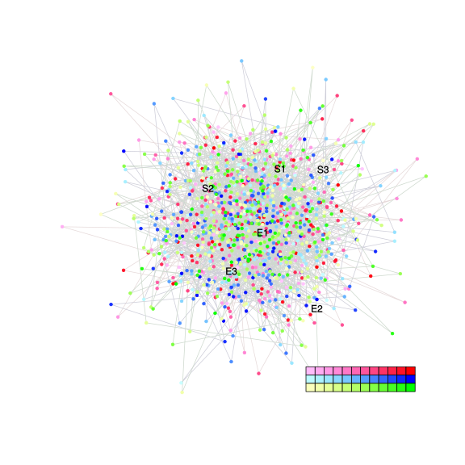

| chain # | burnin | subsample | Iterations (remaining) | command line | subdirectory | directory |
|---|---|---|---|---|---|---|
| 1 | 10000 | 1 | 90000 | bali-phy E1_AA_red3_v2_Manatees.fas -s 56347 -n Manatees_c1 | Manatees_c1-1 | /DATA/work/ONCOGENEVOL/database/trees/Bali-Phy/E1 |
| 2 | 10000 | 1 | 90000 | bali-phy E1_AA_red3_v2_Manatees.fas -s 43502 -n Manatees_c2 | Manatees_c2-1 | /DATA/work/ONCOGENEVOL/database/trees/Bali-Phy/E1 |
| 3 | 10000 | 1 | 90000 | bali-phy E1_AA_red3_v2_Manatees.fas -s 45365 -n Manatees_c3 | Manatees_c3-1 | /DATA/work/ONCOGENEVOL/database/trees/Bali-Phy/E1 |
| P(data|M) = -3047.083 +- 0.098 | Complete sample: 1 topologies | 95% Bayesian credible interval: 1 topologies |

Phylogeny Distribution

| Partition support: Summary |
| Partition support graph: SVG |
| 50% consensus | Newick (+PP) | SVG | |||||
| 66% consensus | Newick (+PP) | SVG | |||||
| 80% consensus | Newick (+PP) | SVG | |||||
| 90% consensus | Newick (+PP) | SVG | |||||
| 95% consensus | Newick (+PP) | SVG | |||||
| 99% consensus | Newick (+PP) | SVG | |||||
| 100% consensus | Newick (+PP) | SVG | |||||
| MAP | Newick (+PP) | SVG | |||||
| greedy | Newick (+PP) | SVG |
{kind=link}
{kind=link}
{kind=link}
{kind=link}
{kind=link}
{kind=link}
{kind=link}
{kind=link}
Alignment Distribution
Partition 1
| Diff | Min. %identity | # Sites | Constant | Informative | ||||
|---|---|---|---|---|---|---|---|---|
| Initial | FASTA | HTML | Diff | 5.1% | 628 | 32 (5.1%) | 0 (0%) | |
| Best (WPD) | FASTA | HTML | AU | 44.5% | 661 | 294 (44.5%) | 0 (0%) |


Mixing
| burnin (scalar) | ESS (scalar) | ESS (partition) | ASDSF | MSDSF | PSRF-CI80% | PSRF-RCF |
|---|---|---|---|---|---|---|
| 744 | 3801 | 0.000 | nan | 0.000 | 1.001 | 1.008 |
Projection of RF distances for the first 3 chains3D | Variation of split PPs across chainsNot generated: multiple chains needed. |
Scalar variables
| Statistic | Median | 95% BCI | ACT | ESS | burnin | PSRF-CI80% | PSRF-RCF |
|---|---|---|---|---|---|---|---|
| prior | -123.3 | (-152.2, -100.1) | 41.96 | 6435 | 430 | 1 | 1.002 |
| prior_A1 | -96.65 | (-123.8, -74.83) | 1.89 | 142860 | 117 | 1 | 1.001 |
| likelihood | -3032 | (-3048, -3014) | 2.964 | 91093 | 167 | 0.9997 | 0.9987 |
| logp | -3155 | (-3177, -3137) | 71.03 | 3801 | 744 | 1 | 1.003 |
| Heat.beta | 1 | ||||||
| Scale1 | 0.8727 | (0.06679, 3.863) | 1 | 270003 | 116 | 1 | 1.001 |
| S1.F.pi.A | 0.06475 | (0.04998, 0.08098) | 8.016 | 33680 | 309 | 1 | 0.9989 |
| S1.F.pi.R | 0.06157 | (0.04716, 0.07758) | 8.08 | 33414 | 178 | 0.9999 | 1.002 |
| S1.F.pi.N | 0.04381 | (0.03207, 0.05684) | 8.113 | 33280 | 485 | 0.9998 | 0.9995 |
| S1.F.pi.D | 0.06778 | (0.05266, 0.08393) | 7.61 | 35479 | 269 | 1 | 0.9977 |
| S1.F.pi.C | 0.02564 | (0.01557, 0.03687) | 8.323 | 32442 | 344 | 1 | 1.006 |
| S1.F.pi.Q | 0.04639 | (0.03425, 0.05979) | 8.471 | 31875 | 272 | 0.9998 | 0.999 |
| S1.F.pi.E | 0.06228 | (0.04801, 0.0774) | 8.268 | 32658 | 679 | 1 | 0.9988 |
| S1.F.pi.G | 0.06669 | (0.05058, 0.08427) | 8.466 | 31891 | 659 | 1 | 1.002 |
| S1.F.pi.H | 0.01623 | (0.009279, 0.02455) | 8.171 | 33045 | 530 | 1 | 1.002 |
| S1.F.pi.I | 0.04511 | (0.03276, 0.05861) | 7.973 | 33865 | 599 | 1 | 1.004 |
| S1.F.pi.L | 0.1119 | (0.09203, 0.1327) | 7.665 | 35226 | 389 | 0.9998 | 1.003 |
| S1.F.pi.K | 0.04999 | (0.03716, 0.0636) | 7.746 | 34857 | 438 | 1 | 0.9975 |
| S1.F.pi.M | 0.0161 | (0.009065, 0.0243) | 8.232 | 32800 | 343 | 0.9993 | 1.002 |
| S1.F.pi.F | 0.03858 | (0.02668, 0.05144) | 8.262 | 32679 | 434 | 1.001 | 0.9957 |
| S1.F.pi.P | 0.04425 | (0.03169, 0.05848) | 8.168 | 33057 | 426 | 0.9999 | 1.001 |
| S1.F.pi.S | 0.06877 | (0.05384, 0.08515) | 7.936 | 34022 | 319 | 1 | 0.9997 |
| S1.F.pi.T | 0.06583 | (0.05099, 0.08159) | 7.774 | 34730 | 392 | 0.9999 | 1 |
| S1.F.pi.W | 0.01723 | (0.009401, 0.02667) | 8.459 | 31919 | 461 | 0.9995 | 1.005 |
| S1.F.pi.Y | 0.02848 | (0.01871, 0.03976) | 7.987 | 33803 | 549 | 0.9999 | 1.002 |
| S1.F.pi.V | 0.05227 | (0.03895, 0.06686) | 8.057 | 33512 | 520 | 0.9998 | 1.008 |
| I1.RS07.meanIndelLengthMinus1 | 4.208 | (1.242, 9.964) | 5.023 | 53751 | 162 | 0.9996 | 1.001 |
| I1.RS07.logLambda | -4.203 | (-4.887, -3.636) | 1.405 | 192144 | 111 | 1 | 1.001 |
| |A1| | 650 | (638, 670) | 4.114 | 65633 | 85 | 0.9565 | 0.9992 |
| #indels1 | 12 | (9, 16) | 2.217 | 121764 | 50 | 0.8 | 1.001 |
| |indels1| | 61 | (37, 101) | 4.114 | 65633 | 85 | 0.9783 | 0.9992 |
| #substs1 | 294 | (277, 306) | 3.317 | 81392 | 75 | 0.95 | 0.9986 |
| Scale1*|T| | 0.7627 | (0.6667, 0.8666) | 1.472 | 183418 | 97 | 1 | 0.9992 |
| |A| | 650 | (638, 670) | 4.114 | 65633 | 85 | 0.9565 | 0.9992 |
| #indels | 12 | (9, 16) | 2.217 | 121764 | 50 | 0.8 | 1.001 |
| |indels| | 61 | (37, 101) | 4.114 | 65633 | 85 | 0.9783 | 0.9992 |
| #substs | 294 | (277, 306) | 3.317 | 81392 | 75 | 0.95 | 0.9986 |
| |T| | 0.875 | (0.06246, 3.854) | 1.028 | 262542 | 107 | 1 | 1.001 |